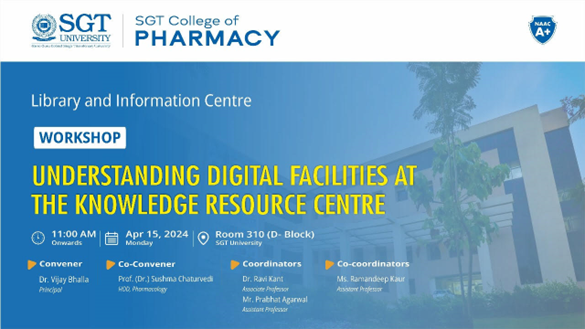
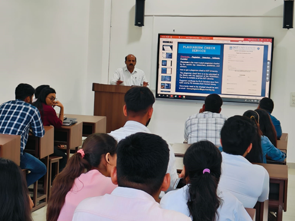
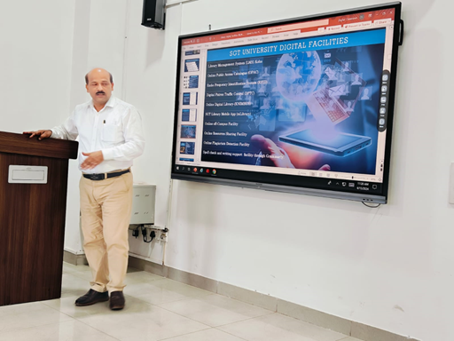
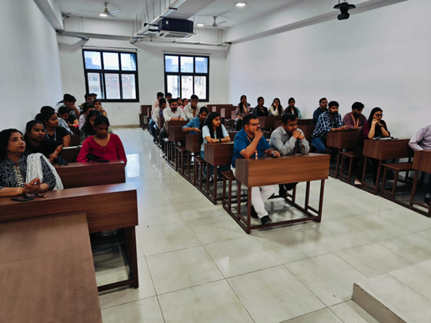
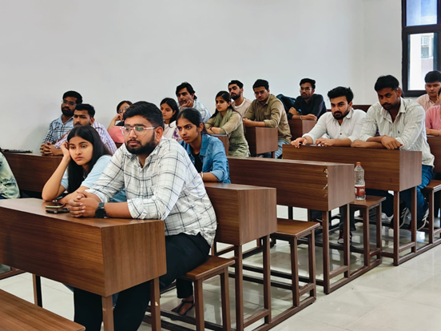

Workshop on Understanding Digital Facilities at the Knowledge Resource Centre
E Brochure-

Organizers:
A workshop on “Understanding Digital Facilities at the Knowledge Resource Centre” was organized at SGT College of Pharmacy-SGT University, Gurugram on Monday, April 15, 2024. The workshop was convened by Prof. Vijay Bhalla (Dean SGTCOP) and Co-convened by Dr. Sushma Chaturvedi (Professor). Dr.Ravi Kant (Associate Professor), and Mr. Prabhat Aggarwal (Assistant Professor) were the coordinators and Dr. Ramandeep Kaur (Assistant Professor) was the co-coordinator of the event.
Report of the Workshop
Introduction:
Library & Information Center at SGT University is a fully air-conditioned cutting-edge facility. The library was carefully designed to provide more space and natural lighting for the comfort of readers. It can accommodate up to 1000 users at one time. It is well-equipped with modern amenities and resources. There is a separate audio-visual room, a computer lab with 40 terminals, a user-friendly indoor and outdoor study section, and a group study area.
Objective of the Workshop:
The objective of event was to empower students with skills for navigating various digital resources available at Library & Information Center of SGT University.
Brief content of event:
A workshop on “Understanding Digital Facilities At The Knowledge Resource Centre” was organised by SGT College of Pharmacy-SGT University, Gurugram on Monday, April 15, 2024. The workshop awaked students about the various digital facilities such as Library management system (LMS) Koha, Online Public Access Catalogue (OPAC), Radio Frequency Identification System (RFID), Digital Patron Traffic Control (DPTC), Online Digital Library (KNIMBUS), SGT Library Mobile App (mLibrary), Online off-Campus Facility, Online Resource Sharing Facility, Online Plagiarism Detection Facility and Spell check and writing support facility through Grammarly. Speaker has also shared the details of pharmacy e-journals, pharmacy e-books, databases available with the library, which could be used by students. About 30 students and faculty members attended the workshop.
Photos of the Event




List of Participants